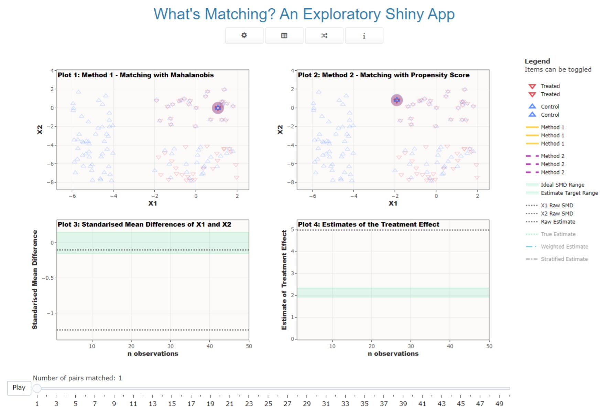

The App
|  |
The front end of the app has been design to be minimalist but with enough information available to the user to work out what’s going on. Figure 1 above shows the main area of the app that’s visible on loading. When the app loads, the first simulation is run meaning that as soon as a user opens the app they are presented with a standard presentation of matched data to investigate. The full home screen of the app also contains a sidebar panel on the right with some additional information for users. Table 1 below outlines some of the options that users have to access through the app.
| Simulate the data and select the matching settings | |
| Look at the data and get insights | |
| Generate data from a random simulation with random matching settings | |
| Links to information about the app (this website) |
There is further information available about the options available for the cog icon in the Data Generation vignette. The second option, displaying the table icon, takes you to a model display with various information about the data that has been generated. This includes some basic plots of the data; a table of the data; information about the match settings (also visible on the main page); and insights about setting a calliper. The calliper plots mirror those laid out in Background vignette.
The third option, displaying the shuffle icon, is a random data and match settings generator. If the user doesn’t have any ideas about what to investigate then they can push this button and the app with decide. It has been designed so that Method 1 and Method 2 will always be different. The fourth button opens this website to the homepage.
In terms of the general user interface, plotly has some
very nice and intuitive options for navigating visual data. Users are
able to easily zoom in to plot areas and reset them using the buttons
available on the top left of the plot. The items in the legend can be
toggled out of the plot area to make visualising things easier. The
slider can be moved about as the user wishes.
Additional contextual information is provided in a sidebar on the right. It includes some basic operational information as well as the settings for easy reference.